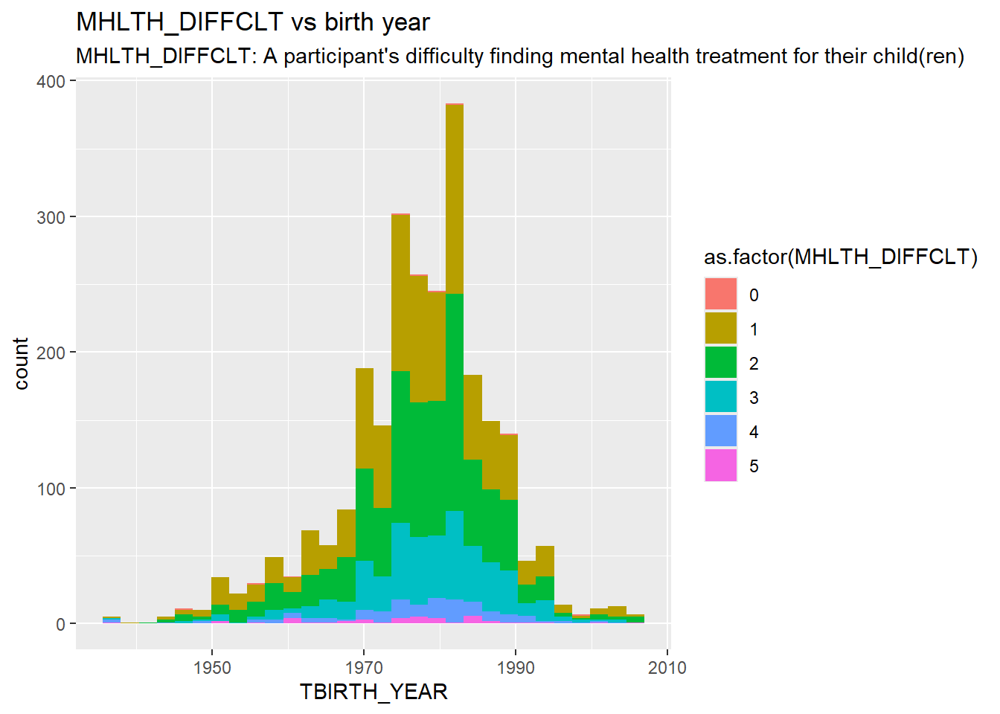

We describe the sources of our data and the cleaning process. The data and information on the data was found through the census website (www.census.gov)
The Data
This data comes from a partnership between the Census Bureau, the NCHS (National Center for Health Statistics) and other federal agencies. It is a 20 minute online survey and is published every 2 weeks beginning on April 23, 2020. The specific data we are looking at from the August 20 - September 16, 2024 survey period and can be found on the Census Bureau website.
The survey was designed to complement the ability of the federal statistical system to rapidly respond and provide relevant information about the impact of COVID-19 in the United States. While the data was collected with a variety of federal agencies, collection was lead by the Census Bureau.
The data for the Household Pulse Survey was collected in response to COVID-19 in order to quickly respond and provide relevant information about the pandemic in the United States. This produces data representing social and economic matters affecting American households, which gets released in near real-time to determine state and federal action. For instance, this survey guiding emergency responses was fundamental, primarily during the pandemic’s peak. There are surveys that track similar data, but the data collection rate is not as frequent and the turnaround time is typically longer. There is existing research on this data. This includes a project evaluating the household pulse survey experiments, and focuses on how the survey can be more effective. Renee Reeves and Kayla Varela, the leads of this research, asked what implementations resulted in higher response rates, particularly contact strategies, e.g., text vs. email, short URL vs. long URL. Reeves and Varela determined that sending texts instead of emails, using shorter URLs containing census.gov over longer URLs, and sending only texts instead of both texts and emails generate more responses. There is a range of other research, including identifying the demographic characteristics of nonrespondents and respondents who select non-definitive response categories, as well as which demographics were more likely to respond to sexual orientation and gender identity (SOGI) questions.
Potential Issues/Biases
The main issue with this data is that it is voluntary and self reported. This means that individuals may have different interpretations of the scales and numbers especially as it relates to levels of worry, anxiety, and loneliness. This is particularly the case for mental health data as there remains a lot of stigma around mental health, however, it is also harder to collect other more accurate data. Further demonstrating this problem, there are several questions that respondents skipped and did not answer.
Additionally, while people are randomly selected to participate, they have the option not to participate. Those that opt out of participating may be more distrustful of the government or too busy to take the time to fill out the survey. Both of these factors could be correlated with other variables in the survey. Respondents are also selected using household addresses. This automatically excludes people experiencing homelessness, as they may not have a household address.
Further, the data questioning has changed throughout the phases of the survey. Before Phase 3.2, the screening questions for mental health concerns asked “Over the last 7 days, how often have you been bothered by … having little interest or pleasure in doing things? Would you say not at all, several days, more than half the days, or nearly every day?” Phase 3.2 altered the question to “Over the last 14 days,” as opposed to the previously stated “7 days.” This could have changed responses given the timeframe is different — having a larger number of days n is more likely to create more varying data since there is more data to report. So, someone might respond “more than half the days” in a 14-day span, but “several days” in a 7-day span.
Variables
The data included a wide variety of variables from veteran status to the impacts of natural disasters. However, we decided to make the data more manageable and focused by only examining the following variables that we were particularly interested in. We also took out variable where a large portion of the data was missing, including school type.
We kept basic descriptive variables of individuals such as Birth Year, State, Race and Ethnicity, Marital Status, Gender and Sexuality. We also wanted to include information about education and employment to see if that factored into mental health data. This includes level of education, school type (public, private, homeschooled) for children in the household, employment status, job loss and reason for not working. We also included if an individual was active duty or a veteran. Finally we examined the specific variables regarding mental health:
Anxiousness
Worry
Interest
Feeling Down
Children’s Mental Health Treatment (Need, if they received treatment, difficulty in finding treatment)
Social Support and Loneliness
Private v Public Health Care
Our full list of variables is used is as follows:
Basic Descriptors Variables * Birth Year * Hispanic v Non-Hispanic * Race * Marital Status * Gender at Birth * Gender Identity * Sexuality * State * Household Income
Education and Employment * Education Level * Job Loss * Employment Status * Kind of Work * Reason not Working
Active Duty and Veteran Status * Active Duty * Veteran
Mental Health * Anxious * Worry * Interest * Down * Children need for mental health treatment * Children receiving mental health treatment * Difficulty in obtaining treatment * Satisfaction with treatment * Social Support * Loneliness * Public vs Private Health Care
Cleaning the Data
First, we load the data.
library(readr)library(ggplot2)library(dplyr)
Attaching package: 'dplyr'
The following objects are masked from 'package:stats':
filter, lag
The following objects are masked from 'package:base':
intersect, setdiff, setequal, union
── Column specification ────────────────────────────────────────────────────────
Delimiter: ","
chr (2): SCRAM, EST_ST
dbl (218): CYCLE, EST_MSA, REGION, HWEIGHT, PWEIGHT, TBIRTH_YEAR, ABIRTH_YEA...
ℹ Use `spec()` to retrieve the full column specification for this data.
ℹ Specify the column types or set `show_col_types = FALSE` to quiet this message.
Out of 220 variables (columns), we will keep 43 that we find may be useful. Furthermore, many variables contain the values “-88” and “-99”. “-88” indicates “Missing / Did not report”, which we interpret as NA. “-99” indicates “Question seen but category not selected”, which we convert to 0. This makes histograms concise (and makes regression easier, although that is not our focus).
data_unclean <-read_csv("dataset/data_unclean.csv", na =c("-88"))
Warning: One or more parsing issues, call `problems()` on your data frame for details,
e.g.:
dat <- vroom(...)
problems(dat)
Rows: 51280 Columns: 220
── Column specification ────────────────────────────────────────────────────────
Delimiter: ","
chr (2): SCRAM, EST_ST
dbl (218): CYCLE, EST_MSA, REGION, HWEIGHT, PWEIGHT, TBIRTH_YEAR, ABIRTH_YEA...
ℹ Use `spec()` to retrieve the full column specification for this data.
ℹ Specify the column types or set `show_col_types = FALSE` to quiet this message.
The output indicates many NA (including “-88”) values.
However, we believe the data is already quite clean, as many questions are only given to some survey participants. For example, MHLTH_DIFFCLT represents a question asking whether the survey participant has difficulty finding mental health treatment for their child(ren). Evidently, only a small fraction of the 51280 participants have answered this question.
sum(!is.na(data_unclean$MHLTH_DIFFCLT))
[1] 2562
The histogram below plots the responses to MHLTH_DIFFCLT against the birth year of participants.
# https://www.statology.org/r-convert-numeric-to-factor/plot =ggplot(data = data_unclean[!is.na(data_unclean$MHLTH_DIFFCLT),],mapping =aes(x = TBIRTH_YEAR, fill =as.factor(MHLTH_DIFFCLT))) +geom_histogram() +ggtitle("MHLTH_DIFFCLT vs birth year",subtitle="MHLTH_DIFFCLT: A participant's difficulty finding mental health treatment for their child(ren)")plot
`stat_bin()` using `bins = 30`. Pick better value with `binwidth`.

Here, 0: Question seen but category not selected 1: Not difficult 2: Somewhat difficult 3: Very difficult 4: Unable to get treatment due to difficulty 5: Did not try to get treatment
Codebook
Page Info
Where to keep data?
Below 50mb: In dataset folder
Above 50mb: In dataset_ignore folder. This folder will be ignored by git so you’ll have to manually sync these files across your team.
Sharing your data
For small datasets (<50mb), you can use the dataset folder that is tracked by github. Add the files just like you would any other file.
If you create a folder named data this will cause problems.
For larger datasets, you’ll need to create a new folder in the project root directory named dataset-ignore. This will be ignored by git (based off the .gitignore file in the project root directory) which will help you avoid issues with Github’s size limits. Your team will have to manually make sure the data files in dataset-ignore are synced across team members.
Your load_and_clean_data.R file is how you will load and clean your data. Here is a an example of a very simple one.
source("scripts/load_and_clean_data.R",echo =TRUE# Use echo=FALSE or omit it to avoid code output )
> library(tidyverse)
── Attaching core tidyverse packages ──────────────────────── tidyverse 2.0.0 ──
✔ forcats 1.0.0 ✔ stringr 1.5.1
✔ lubridate 1.9.3 ✔ tibble 3.2.1
✔ purrr 1.0.2 ✔ tidyr 1.3.1
── Conflicts ────────────────────────────────────────── tidyverse_conflicts() ──
✖ dplyr::filter() masks stats::filter()
✖ dplyr::lag() masks stats::lag()
ℹ Use the conflicted package (<http://conflicted.r-lib.org/>) to force all conflicts to become errors
Rows: 20 Columns: 5
── Column specification ────────────────────────────────────────────────────────
Delimiter: ","
chr (1): bank
dbl (4): min, white, himin, hiwhite
ℹ Use `spec()` to retrieve the full column specification for this data.
ℹ Specify the column types or set `show_col_types = FALSE` to quiet this message.
You should never use absolute paths (eg. /Users/danielsussman/path/to/project/ or C:\MA415\\Final_Project\).
You might consider using the here function from the here package to avoid path problems.
Load and clean data script
The idea behind this file is that someone coming to your website could largely replicate your analyses after running this script on the original data sets to clean them. This file might create a derivative data set that you then use for your subsequent analysis. Note that you don’t need to run this script from every post/page. Instead, you can load in the results of this script, which could be plain text files or .RData files. In your data page you’ll describe how these results were created. If you have a very large data set, you might save smaller data sets that you can use for exploration purposes. To link to this file, you can use [cleaning script](/scripts/load_and_clean_data.R) wich appears as cleaning script.
Rubric: On this page
You will
Describe where/how to find data.
You must include a link to the original data source(s). Make sure to provide attribution to those who collected the data.
Why was the data collected/curated? Who put it together? (This is important, if you don’t know why it was collected then that might not be a good dataset to look at.
Describe the different data files used and what each variable means.
If you have many variables then only describe the most relevant ones and summarize the rest.
Describe any cleaning you had to do for your data.
You must include a link to your load_and_clean_data.R file.
Rrename variables and recode factors to make data more clear.
Also, describe any additional R packages you used outside of those covered in class.
Describe and show code for how you combined multiple data files and any cleaning that was necessary for that.
Some repetition of what you do in your load_and_clean_data.R file is fine and encouraged if it helps explain what you did.
Organization, clarity, cleanliness of the page
Make sure to remove excessive warnings, use clean easy-to-read code (without side scrolling), organize with sections, use bullets and other organization tools, etc.